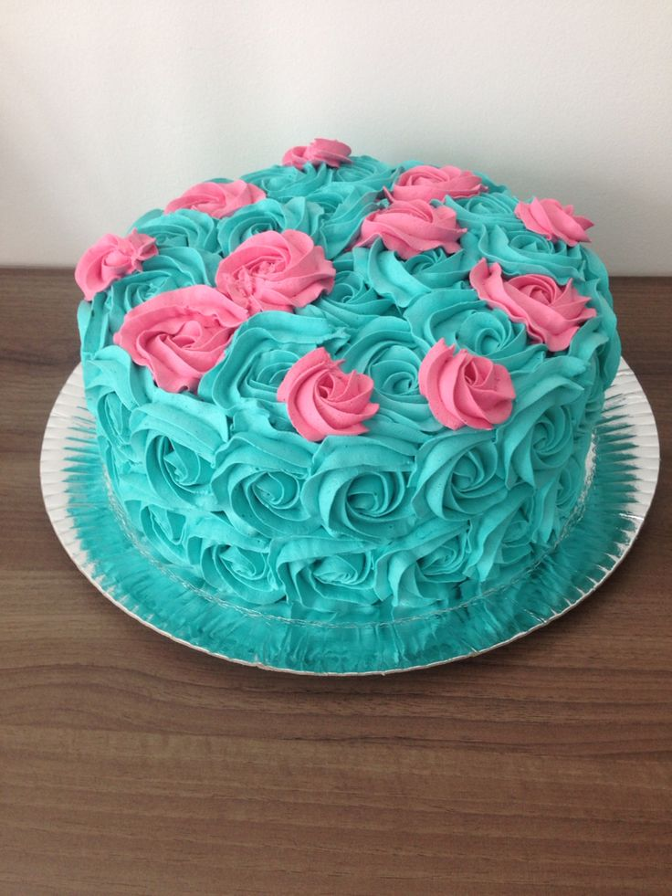

Nossa história

Seja bem Vindo!
Uma Doceira com um Toque Especial:
Imagine uma jovem apaixonada por culinária, que desde criança adorava fazer doces e bolos. Ela decide transformar essa paixão em um negócio e abre uma pequena doceria em sua cidade. A Doce Desejo logo se torna famosa por seus doces artesanais e saborosos, feitos com ingredientes frescos e de alta qualidade.
Conheça o nosso Cardápio
Bolo
Que tal um bolo que derrete na boca? Imagine um bolo de chocolate úmido e intenso, com pedaços generosos de chocolate meio amargo e uma cobertura cremosa de ganache.

Docinhos
Um docinho é aquela pequena porção de felicidade que nos presenteia com um sabor intenso e uma textura irresistível. Pode ser um brigadeiro clássico, um beijinho cremoso, um brigadeiro gourmet com recheio de ninho, um bolinho de chuva quentinho ou até mesmo um mini cupcake decorado.